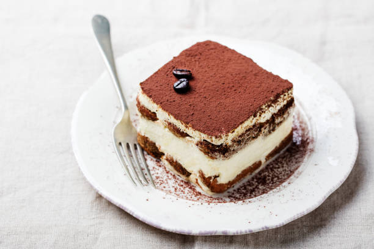
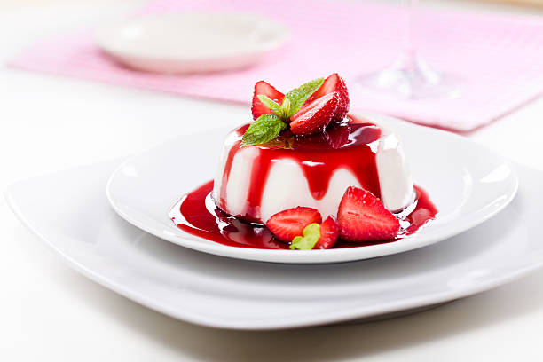
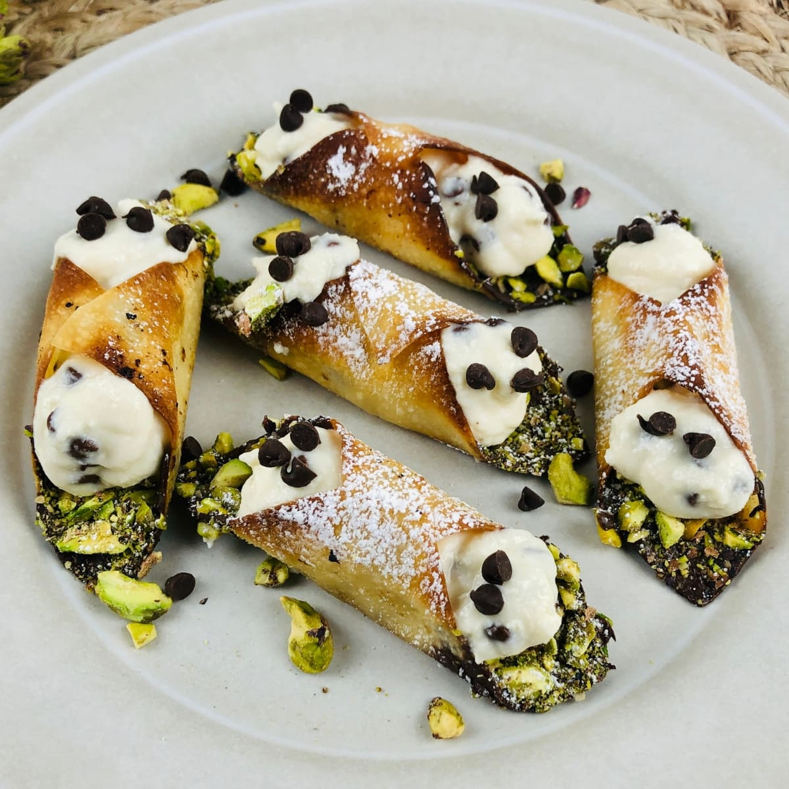

İtalyan Tatlıları
Tiramisu

Malzemeler:
250 gram mascarpone peyniri
3 adet yumurta
6 yemek kaşığı şeker
200 ml espresso kahve
200 gram ladyfinger bisküvi
Kakao tozu
Tarif: Tiramisu yapılışı:
- Yumurtaların sarı ve beyazlarını ayırın. Yumurta beyazlarını bir kaseye alın ve mikser ile katılaşana kadar çırpın.
- Başka bir kasede yumurta sarılarını ve toz şekeri iyice çırpın. Ardından mascarpone peyniri ekleyip pürüzsüz bir karışım elde edene kadar çırpın.
- Çırpılmış yumurta beyazlarını, mascarpone karışımına dikkatlice ekleyin ve spatula ile yavaşça karıştırın.
- Güçlü kahveyi bir kaseye alın. Bisküvileri kahveye batırın ve bir dikdörtgen veya kare servis kabına tabanlarını oluşturacak şekilde dizin.
- Üzerine mascarpone karışımının yarısını yayın. Ardından tekrar bisküvi tabakası oluşturun ve kalan mascarpone karışımını üzerine yayın.
- Tiramisuyu buzdolabında en az 4 saat dinlendirin, tercihen bir gece.
- Servis yapmadan önce üzerine süzülmüş kakao tozu serpin ve dilimleyerek servis yapın.
Panna Cotta

Malzemeler:
500 ml krema
100 gram toz şeker
2 yaprak jelatin
1 çay kaşığı vanilya özütü
Tarif: Panna Cotta yapılışı...
- Krema, süt ve toz şekeri bir tencereye alın. Orta ateşte karıştırarak şeker eriyene kadar ısıtın.
- Jelatini bir miktar soğuk su içinde 5-10 dakika bekletin.
- Tenceredeki krema karışımını ocaktan alın. Jelatini ekleyip iyice karıştırın ve eriyene kadar bekletin.
- Vanilya özünü veya vanilya çubuğunu ekleyin ve karıştırın.
- Panna Cotta karışımını küçük kaselere veya kuplara dökün.
- Buzdolabında en az 4 saat (tercihen bir gece) dinlendirin.
- Servis yapmadan önce üzerine taze çilek veya mevsim meyveleri ekleyin.
Cannoli

Malzemeler:
250 gram un
50 gram şeker
50 gram tereyağı
1 yumurta
1 yemek kaşığı beyaz şarap sirkesi
100 gram ricotta peyniri
50 gram pudra şekeri
1 çay kaşığı vanilya özütü
Kızartmak için sıvı yağ
Tarif: Cannoli yapılışı:
- Unu, toz şekeri ve tereyağını bir kasede karıştırın. Ardından yumurta ve şarabı ekleyin ve hamur yoğrulabilir bir kıvama gelene kadar yoğurun.
- Hamuru streç filmle sarın ve buzdolabında en az 30 dakika dinlendirin.
- Hamuru buzdolabından çıkarın ve hafifçe unlanmış bir zeminde ince bir şekilde açın.
- Açılmış hamuru, cannoli kalıplarına sararak ya da bir bardak yardımıyla daireler keserek şekillendirin.
- Kızartma yağını derin bir tencerede ısınana kadar ısıtın. Hamur parçalarını kızgın yağa atın ve altın rengi alana kadar kızartın. Ardından kağıt havluyla fazla yağı alın.
- Ricotta peynirini vanilya özü veya portakal kabuğu rendesi ile tatlandırın. İsteğe bağlı olarak çikolata parçaları veya kuru meyveler ekleyebilirsiniz.
- Kızarmış cannoli kabuklarını soğuduktan sonra doldurma için kullanılan krema ile doldurun.
- Üzerlerine pudra şekeri serperek servis yapın.